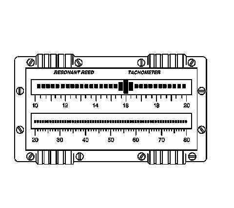

Reed Tachometer Description
Reed Tachometer Description

The reed tachometer consists of 2 rows of reeds arranged side-by-side. Each reed is tuned to vibrate or resonate when it is excited by a specific frequency. The reeds are arranged by their specific resonant frequency, increasing from left to right, ranging from 10-80 Hz. This arrangement allows for a visual display of the most dominate frequencies which fall within this range.
The reed tachometer can be a helpful diagnostic tool, however it is extremely sensitive to external inputs that are not related to the vibration concern, such as rough road surfaces, etc., and it is difficult to master its use. Due to these conditions, the reed tachometer has limited diagnostic capability.
Due to the limited diagnostic capability, limited availability and increasing costs of the reed tachometer, it is NOT recommended as the primary tool to use in diagnosing a vibration concern.
When diagnosing a vibration concern, use the J 38792-A , electronic vibration analyzer (EVA). The J 38792-A has been designed to overcome the shortcomings to the reed tachometer. Refer to Electronic Vibration Analyzer (EVA) Description and Operation (Electronic Vibration Analyzer (EVA) Description and Operation) .